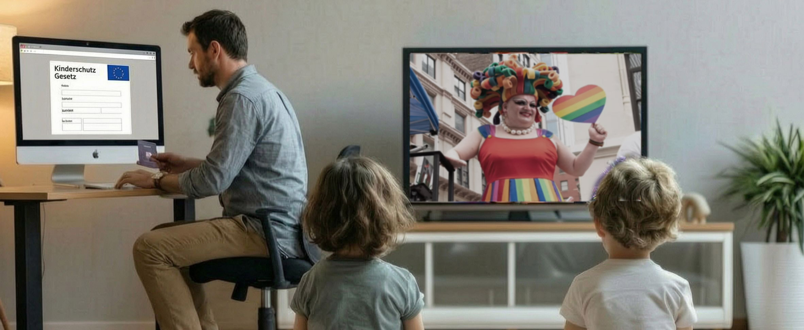

Totalüberwachung, frei Haus

„Kinderschutz“ steht auf dem Etikett. In der Verpackung liegt ein Ausweiszwang fürs Internet: Dokument oder Gesichtsscan, nicht nur für soziale Medien, sondern für App-Marktplätze, Videospiele, Videoplattformen und KI-Chatbots. netzpolitik.org, gewiss kein rechtes Blatt, nennt das drohende Ergebnis „einen umfassenden Kontroll-Apparat oder gar einen Apparat zur Massenüberwachung“.
Am 13. Juli nahm Ursula von der Leyen die Empfehlungen entgegen, die das begründen sollen. Wer hat sie geschrieben? Die Kommission beantwortet das auf ihrer eigenen Seite: Die Präsidentin „hat ein Sonderpanel von Experten eingesetzt“, angekündigt in ihrer Rede zur Lage der Union 2025. Es tagte dreimal. Noch bevor die Experten ihre Ergebnisse vorlegen konnten, hatte die Auftraggeberin sich öffentlich für Verbot und Alterskontrollen starkgemacht. In allen drei Sitzungen saß die 5Rights Foundation am Tisch, die seit Jahren für Altersgrenzen im Netz wirbt.
Dann sagte von der Leyen: „Das sind genau die Belege, auf die wir gewartet haben.“ Sie sprach von Daten, von Fakten, von Konsens.
Konsens womit? Der Deutsche Ethikrat hat ein Social-Media-Verbot klar abgelehnt und den Alterskontrollen enge Grenzen gezogen. Über 400 Forschende aus 29 Ländern forderten schon im März einen Stopp, die Einführung sei „gefährlich und gesellschaftlich nicht hinnehmbar“. netzpolitik nennt die Berufung auf Belege „grob irreführend“. Die taz betitelt ihren Beitrag „Es droht eine Luftnummer“.
Keine dieser Stimmen lässt sich als rechts abstempeln.
Der Ethikrat hat einen Satz geschrieben, den man zweimal lesen sollte: Die Technologien könnten „als Zensurinstrument missbraucht“ werden, auch gegen Inhalte, die „politisch unerwünscht“ sind.
Was das praktisch heißt, ist aktenkundig. Das BKA koordiniert Aktionstage gegen strafbare Hasspostings. Beim zwölften, im Juni 2025, liefen an einem Tag über 180 polizeiliche Maßnahmen und mehr als 65 Durchsuchungsbeschlüsse. Die Fallzahlen stiegen von 2.411 im Jahr 2021 auf 10.732 im Jahr 2024. Die Wohnungstür geht dabei nicht mittags auf. Die Alterskontrolle liefert die fehlende Zutat: den Namen hinter dem Konto.
Dieselbe Frau hat schon einmal entschieden, was Kinderschutz sein darf. 2021 verbot Ungarn, Minderjährigen LGBTQ-Inhalte zu zeigen, in Schulmaterial und im Fernsehen. Ursula von der Leyen nannte das Gesetz „eine Schande“ und ließ ihre Kommission klagen. Am 21. April 2026 gab der Europäische Gerichtshof ihr recht und stellte dabei zum ersten Mal in einem Verfahren gegen einen Mitgliedstaat einen Verstoß gegen Artikel 2 des EU-Vertrags fest, die Grundwerte der Union. Schwereres Geschütz besitzt diese Union nicht.
Dasselbe Urteil enthält zwei Sätze, die sie gelesen haben dürfte. Erstens: Beschränkungen können durch das Recht der Eltern gerechtfertigt sein, die Erziehung ihrer Kinder nach den eigenen Überzeugungen zu sichern. Zweitens: Solange es keine harmonisierenden Regeln auf EU-Ebene gibt, haben die Mitgliedstaaten einen Beurteilungsspielraum dabei, welche Inhalte Minderjährige gefährden.
So genau schaut sie hin, wenn ein anderer entscheiden will, was Kinder sehen. Jetzt entscheidet sie es selbst, für alle.
Denn eine Altersgrenze für Kinder prüft man nicht bei Kindern. Man prüft sie bei jedem: alle erfasst unter dem Vorwand des Kinderschutzes. Ein Melderegister für alle EU-Bürger. Und wer sich ausweisen muss, bevor er redet, redet anders. Das ist keine Nebenwirkung.
Den Eltern nimmt sie die Entscheidung gleich mit ab. In den Empfehlungen steht ausdrücklich, die Durchsetzung der Altersstufen solle nicht bei ihnen liegen, sondern bei technischen Kontrollsystemen. Was das eigene Kind sehen darf, bestimmt dann kein Elternhaus mehr, sondern ein Bürokratieapparat aus Brüssel, dem das Wohl unserer Kinder herzlich egal ist.
Bei ihrem eigenen Zugriff gibt es kein Gericht, kein Verfahren, keinen Streithelfer. Es gibt ein Panel, das sie selbst eingesetzt hat. Für Ungarns Gesetz brauchte es Artikel 2. Für ihr eigenes genügt der Sommer.
Mehr dazu: Ungarns Sünde, Brüssels Pflicht, Schlimmer als Orwell? und Das wird es mit uns nicht geben.